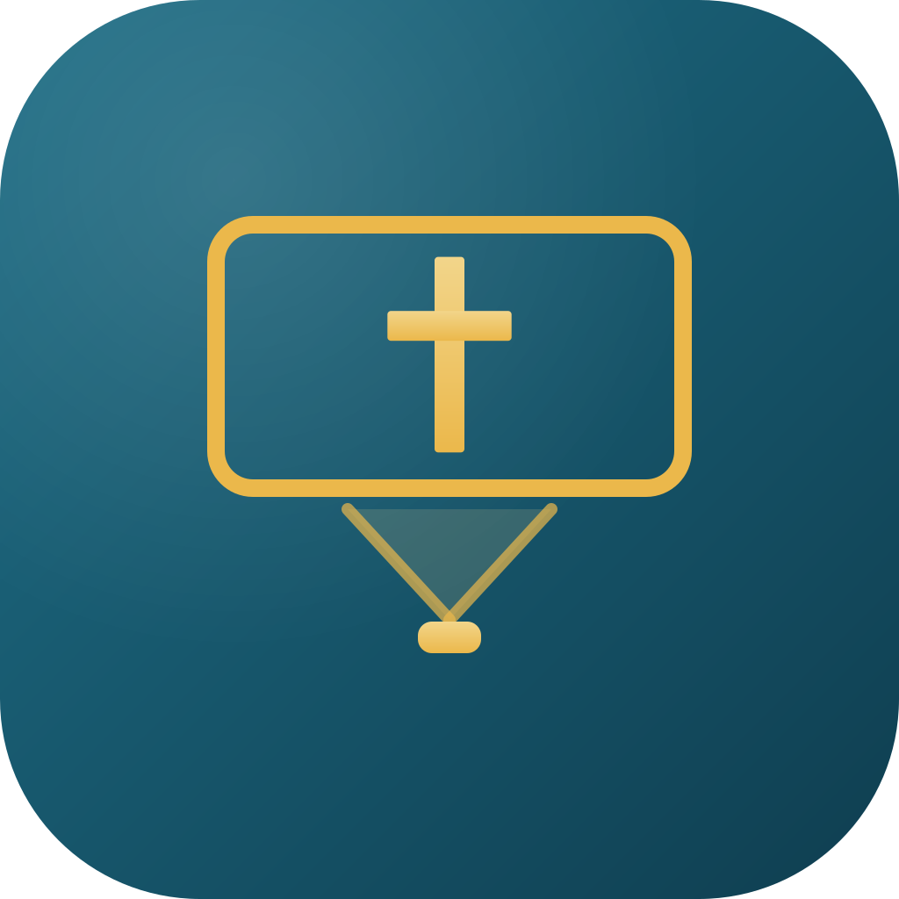

Ti verktøy.
Én gylden tråd.
Sunday Suite er en familie av programmer for den moderne menigheten — fra opptak og strømming til presentasjon, planlegging, sang, podkast, teksting og trykksaker. Hvert verktøy står på egne bein, men deler én konto, ett designspråk og én tråd av gull.
Familien av Sunday-apper
Ti verktøy — flere alt live, resten under utvikling. Hvert produkt eier sin egen dype juveltone, og det gylne korset binder dem sammen. Klikk deg inn for å lese mer om hvert program.
 Beta
BetaSundayRec
Tar opp gudstjenesten, transkriberer talen, strømmer live og publiserer podkasten — av seg selv. Den modne kjernen i suiten, ute i beta.
- Lyd & video
- Live-strøm
- AI-transkripsjon
- Podkast
 Under utvikling
Under utviklingSundayStudio
Den enkleste proffe podkastprodusenten: mange mikrofoner samtidig, AI-opprydding, en jingle på under ett minutt og en ferdig, normalisert MP3.
- Fleirmikrofon
- AI-mastering
- Jingle
- Eksport

Under utviklingSundayStage
Sangtekster, bibelvers og media på skjermen bak alteret — et nordisk alternativ til ProPresenter, med køstyring og trygg, isolert visning.
- Sangtekster
- Køer
- Media
- ⌘K-palett
 Under utvikling
Under utviklingSundayPlan
Planlegg gudstjenesten og sett opp de frivillige på minutter. En rettferdig auto-fyll-motor balanserer kompetanse, rotasjon og utbrenthet.
- Tjenesteplan
- Auto-turnus
- SMS
- TONO-status
 Under utvikling
Under utviklingSundaySong
Finn riktig sang med semantisk søk og AI på tvers av språk — med TONO og CCLI som førsteklasses felt i datamodellen fra start.
- Semantisk søk
- AI-forslag
- TONO + CCLI
- Fleirspråk
 Under utvikling
Under utviklingSundayEdit
Tekst video ti ganger raskere. Hvert ord får en konfidens-score og fargemarkeres — du retter bare det gule. Lokal og privat: videoen lastes aldri opp.
- Konfidens
- Kontekst-priming
- Lokal Whisper
- SRT/VTT
 Under utvikling
Under utviklingSundayPaper
Splitt sangbøker, sett opp gudstjenesteprogrammer, lag menighetsblad, storskrift-utgaver og skjemaer — med profesjonell Typst-layout og OCR under panseret.
- Sangbok-splitt
- Programmer
- Menighetsblad
- Storskrift
 Under utvikling
Under utviklingSundayTranslate
Hvem som helst i benken hører gudstjenesten på sitt eget språk — eller klarere og høyere — rett i øreproppene. En tolk snakker; mobilene lytter. Ingenting å installere.
- Live tolking
- Lytteanlegg
- AI-undertekster
- Hvilken som helst mobil
 Live
LiveSundayInfo
Gjør en hvilken som helst TV til menighetens infotavle — gudstjenestetider, dagens plan, vær og bibelvers. Par en skjerm på sekunder; den går videre selv om nettet faller.
- Enhver skjerm
- Flere redaktører
- Kirkeår
- Virker offline
 Live
LiveSundayBooking
Book rom, utleie og avtaler uten dobbeltbooking — kalenderen gjør overlapp strukturelt umulig. En del av SundayPlan-familien.
- Ingen dobbeltbooking
- Rom & utleie
- Godkjenningskø
- Delt konto
Én Sunday-konto
Målet: én konto signerer deg inn på alle verktøyene, og det du gjør i ett program dukker opp der det trengs i de andre — uten dobbeltarbeid.
- Felles innlogging
- Delt designspråk
- Sikker nøkkelhåndtering
Det første kirketeknologiøkosystemet bygd for nordisk virkelighet.
Verdens beste menighetsverktøy er bygd for amerikanske kirker. Sunday Suite starter med den norske og nordiske hverdagen — TONO, bokmål og nynorsk, personvern og lokal kontroll — og har globale ambisjoner derfra.
TONO i førsteklasse
TONO er en del av datamodellen fra første rad: hvert verk kan bære en TONO-ID, og hver bruk kan merke om den ble strømmet (egen royalty-pott). Det er den nordiske ambisjonen, ikke en ettertanke.
Lokalt og privat først
Opptak, video og transkripsjon kjøres på din egen maskin. Dataene blir hos deg med mindre du selv velger å dele.
Én konto, hele søndagen
Målet er at én innlogging signerer deg inn på Rec, Stage, Plan og Song, med nøkler trygt i nøkkelringen.
Når verktøyene snakker sammen
Den virkelige magien skjer i skjøtene. Slik er Sunday-appene designet for å spille sammen etter hvert som de blir ferdige.
En liten verktøykasse for å bygge fellesskap
Ved siden av de ti kjerneproduktene snekrer Sunday Suite på små, lekne verktøy for menighet og klasserom — spill og gruppeaktiviteter som hjelper folk å møtes, bli kjent og knytte bånd. De kjører rett i nettleseren, uten installasjon. En krok av verkstedet som bare kommer til å vokse.
SundayQuiz
Bli-kjent-bingo for første samling — alle jakter på folk som passer rutene, og rommet tiner opp på et blunk.
SundayChess
Sjakkturnering på storskjerm for klasserommet — sveitsiske runder og sluttspill, styrt fra én skjerm, med solo-bot å øve mot.
SundayTurnering
Live turneringstavle for hvilken som helst idrett eller lek — serie, cup og sluttspill, med storskjerm-visning og en telefon i hver hånd.
SundayMarket
Et kjapt og vennlig handelsspill for en gruppe — kjøp billig, selg dyrt, unngå hungersnøden og slå bordet før det ringer ut.
SundayHarvest
Bibelsk social deduction — hvete blant ugresset (Matteus 13). Ingen elimineres; alle er med helt til den store avsløringen.
SundayTicTacToe
Bondesjakk som turnering — tre brettstørrelser, sveitsiske runder og sluttspill, styrt fra én skjerm, med en bot å øve mot.
SundayBasar
En digital bedehus-basar — selg årer og trekk premiene live på storskjerm. Appen rører aldri penger; du bekrefter hver Vipps-betaling selv.
SundayPanel
Anonyme spørsmål fra salen til et panel på storskjerm — ingen app, ingen innlogging. Alle spør med ordkode eller QR; du velger hva som vises.
Flere fellesskapsverktøy ligger på arbeidsbenken. Har du en idé til ett? dev@sundaysuite.app
La oss bygge en bedre søndag sammen.
Vil du teste SundayRec-betaen, samarbeide eller bare høre mer om hvor Sunday Suite er på vei? Vi vil gjerne høre fra deg.